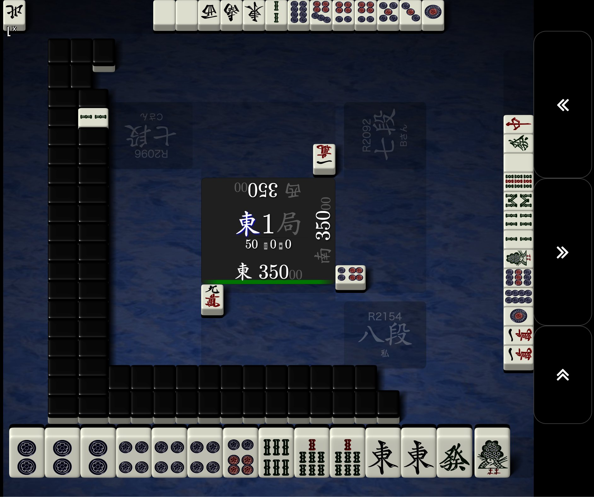
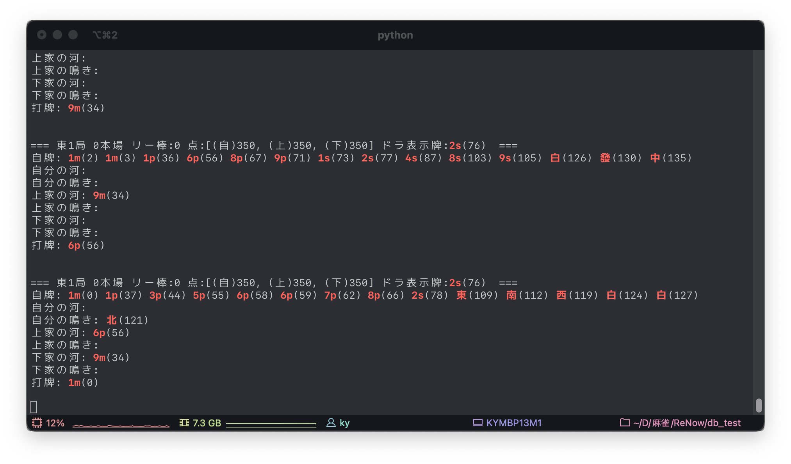

何切る問題
まずは、何切る問題。他にもリーチ判断や鳴き判断など考慮すべきことはあるが、とりま一歩ずついこう。
鳳凰卓すべての局面について、"自分の牌、自分の河、他家の河、ドラ牌、点棒、他家のリーチ、点数状況、今の場と局"に対する"捨てた牌"の組み合わせを教師データとして学習させればできあがり。
何局面データがあるのか
機械学習には膨大な量のデータが必要である。何をもって膨大かというのは解析したいものの複雑さに依存すると思うが、麻雀の場合はどの程度なのだろうか？やってみなくちゃわからないが、手元にある鳳凰卓の三麻の牌譜についてデータ数を調べてみる。
ダウンロードした鳳凰卓の三麻の牌譜については以下。
| 年 | ファイル数（戦数） | 容量 |
|---|---|---|
| 2009 | 21994 | 242 MB |
| 2010 | 38209 | 510 MB |
| 2011 | 51150 | 708 MB |
| 2012 | 60854 | 839 MB |
| 2013 | 48664 | 667 MB |
| 2014 | 54540 | 749 MB |
| 2015 | 51310 | 708 MB |
| 2016 | 47769 | 660 MB |
| 2017 | 51958 | 716 MB |
| 2018 | 57734 | 795 MB |
| 2019 | 62392 | 859 MB |
| 2020 | 74320 | 1.1 GB |
| 2021 | 71829 | 992 MB |
| 合計 | 692723 | 9.3 GB |
2009年は鳳凰卓ができたばかりということで、データ数も少ない。おそらく参戦している人数も少なかったのではないかと推察する。参戦している人数が多いほどレベルも高いという全く根拠のない勝手な偏見から、それなりにデータ数の多い2011年以降のデータを用いるのが良いかと思う。
ということで、2011年以降のデータを対象に検討をすすめる。
BYEのあるファイルを除外
<BYE>タグは接続が切れて退室したことを示しており、その後ツモ切りになってしまう。場が乱れるので、BYEのあった試合は省くことにする。
三鳳南喰赤戦以外を除外
東風戦だったり、喰いタンありなし、赤ありなしで打ち方が変わりそうなので三鳳南喰赤戦以外を除外。
三鳳南喰赤戦のファイル数
上記を除外して、最終的に600,274戦分となった。
総局数
三麻の鳳凰卓600,274戦に含まれる総局数は、5,418,171局である。
総局面数
すべての局面はいくつあるであろうか。何切る問題は打牌の選択だから、牌譜に含まれる打牌の数だけ局面があると考えていいだろう。下記のコマンドで集計すると、173,755,995局面あることになる。もちろんリーチ後にはツモ切り以外の選択肢はないし、鳴き局面もあるので厳密には違うが、今は細かいことは気にしない。概算でどの程度のデータが有るか知りたいのだ。
1.7億局面のデータが十分な量かどうかはわからないがこれで進めよう。
mjlogから何切る問題のデータセットを作る。
何切る問題のデータセットを作成する。mjlogを上から順に処理していって、打牌時に見えている牌をインプット、打牌をアウトプットとするデータセットを作る。
打牌時に見えている牌は、"手牌"、"自分の鳴き牌"、"自分の河"、"上家の河"、"上家の鳴き牌"、"下家の河"、"下家の鳴き牌"、"ドラ表示牌"となる。その他、東1局などの場・局の情報、何本場、供託されているリーチ棒、点数、相手がリーチしているか、を打牌選択のためのインプットとして学習させる。
mjlogを解析して各局面の情報を出力したのが以下。


全局面は確認できないが、数局確認したところ正しいことは確認している。（これが間違っていたら間違ったことを学習させることになるので大変。）
本データ整理において、以下は仕様である。
- 立直後は強制ツモ切りのため学習局面から削除。
- 鳴き牌について。誰から鳴いたかは記録しないが、誰かの河に鳴いた牌が記録として存在するので、AIがうまいことその情報を拾い上げるかもしれない。
- 大明槓と加槓は区別しない。場に見えている牌という意味で同じ。ただ、河の情報には現れるので、AIがうまいことその情報を拾い上げるかもしれない。
- 暗槓は手配と鳴き牌のどちらにも表示される。面前だが相手からは見えているという状況が必要。AIがうまいことその情報を拾い上げるだろう。
- 北を抜く場合、3枚抜いた場合と鳴いてポンした場合、鳴き牌だけみても区別できないが、手配の枚数で区別が可能。AIがうまいことその情報を拾い上げるだろう。
インプットデータ、アウトプットデータの形式
多分、学習効率とか正答率に影響を大きく及ぼす部分の一つ。全結合モデルとCNNモデルの2つを今の所想定しているので、どちらにも使えるようにデータを組むと楽ではある。ただ全結合モデルの場合に無駄なデータが増えることにはなる。